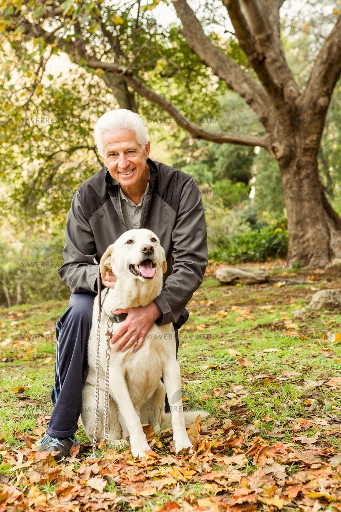

<!DOCTYPE html>
<meta charset="UTF-8">
    <meta name="viewport" content="width=device-width, initial-scale=1.0">
<html lang="ru">
<head>
        <link rel="icon" href="d:\Диплом6\Изображения\Логотип.png" type="image/x-icon"> <!-- Указывает на файл ICO иконки -->
        <link rel="shortcut icon" href="d:\Диплом6\Изображения\Логотип.png" type="image/x-icon"> <!-- Альтернативный способ для некоторых браузеров -->

    
    <title>Фотолаборатория "Белый Бим чёрное ухо"</title>
    <link rel="stylesheet" href="css/css vopros..css">
    <style>
        /* Стили для FAQ */
        #faq {
            background-color: #f9f9f9; /* Светлый фон для всего раздела */
            padding: 20px;
            border-radius: 8px;
            margin-top: 20px;
        }
        .faq-item {
            margin-bottom: 15px;
            border: 1px solid #ddd; /* Рамка вокруг каждого вопроса */
            border-radius: 5px;
            background-color: #ffffff; /* Белый фон для вопросов и ответов */
            overflow: hidden; /* Скрыть переполнение */
            box-shadow: 0 2px 5px rgba(0, 0, 0, 0.1); /* Тень для вопросов */
            transition: box-shadow 0.3s; /* Плавный переход для тени */
        }
        .faq-item:hover {
            box-shadow: 0 4px 10px rgba(0, 0, 0, 0.2); /* Увеличенная тень при наведении */
        }
        .faq-question {
            padding: 10px;
            cursor: pointer;
            background-color: #e0e0e0; /* Фон для вопросов */
            margin: 0; /* Убираем отступы */
            font-weight: bold; /* Жирный текст для вопросов */
            transition: background-color 0.3s, color 0.3s, transform 0.3s; /* Плавный переход для фона и цвета текста */
        }
        .faq-question:hover {
            background-color: #d0d0d0; /* Цвет фона при наведении */
            color: #007BFF; /* Цвет текста при наведении */
            transform: scale(1.02); /* Легкое увеличение при наведении */
        }
        .faq-answer {
            display: none; /* Скрываем ответы по умолчанию */
            padding: 10px;
            opacity: 0; /* Начальная непрозрачность */
            transition: opacity 0.3s ease; /* Плавный переход для непрозрачности */
        }
        .faq-answer.show {
            display: block; /* Показываем ответ */
            opacity: 1; /* Полная непрозрачность */
        }

        
    </style>


</head>
<body>
    
    
    <footer>
        <div class="top-footer">
            <link rel="icon" href="Изображения/Логотип.png" type="image/x-icon">
            
            <div class="header-content">
                <h1>Фотолаборатория "Белый Бим чёрное ухо"</h1>
                <nav>
                    <ul>
                        <ul>
                            <ul>
                                <li><a href="index.html">Главная</a></li>
                                <li><a href="pravila.html">Отзывы</a></li>
                                <li><a href="contact.html">О нас</a></li>
                                <li><a href="vopros.html">Часто задаваемые вопросы</a></li>
                                <li><a href="uslugi.html">Услуги</a></li>
                            </ul>
                        </ul>
                    </ul>
                    
                    </ul>
                </nav>
            </div>
        </div>
        <style>
            body {
                position: relative;
                margin: 0;
                height: 100vh;
                background-color: #f0f0f0;
                overflow: hidden; /* Скрывает переполнение */
            }
            
            .image-container {
                position: absolute; /* Позволяет перемещать изображения */
                border: 2px solid rgba(0, 0, 0, 0.5); /* Тонкая полупрозрачная рамка */
                border-radius: 8px; /* Скругленные углы */
                transition: transform 0.3s, opacity 0.3s, box-shadow 0.3s; /* Плавный переход */
                opacity: 0; /* Начальная прозрачность для анимации загрузки */
                box-shadow: 0 4px 10px rgba(0, 0, 0, 0.3); /* Легкая тень под изображением */
            }
            
            /* Примеры начальных координат, наклона и размеров для изображений */
            .image1 { 
                top: 680px; /* Устанавливает верхнее положение изображения на 660 пикселей от верхнего края */
                left: 105px; /* Устанавливает левое положение изображения на 135 пикселей от левого края (зеркальное размещение) */
                width: 14vw; /* Устанавливает ширину изображения на 14% от ширины окна просмотра */
                height: auto; /* Высота изображения автоматически подстраивается в соответствии с его пропорциями */
                transform: rotate(15deg); /* Поворачивает изображение на 15 градусов по часовой стрелке */
            }
            
            .image2 { 
                top: 420px; /* Устанавливает верхнее положение изображения на 450 пикселей от верхнего края */
                left: 86px; /* Устанавливает левое положение изображения на 200 пикселей от левого края (зеркальное размещение) */
                width: 14vw; /* Устанавливает ширину изображения на 14% от ширины окна просмотра */
                height: auto; /* Высота изображения автоматически подстраивается в соответствии с его пропорциями */
                transform: rotate(-7deg); /* Поворачивает изображение на 7 градусов против часовой стрелки */
            }
            
            .image3 { 
                top: 130px; /* Устанавливает верхнее положение изображения на 200 пикселей от верхнего края */
                left: 40px; /* Устанавливает левое положение изображения на 200 пикселей от левого края (зеркальное размещение) */
                width: 14vw; /* Устанавливает ширину изображения на 14% от ширины окна просмотра */
                height: auto; /* Высота изображения автоматически подстраивается в соответствии с его пропорциями */
                transform: rotate(22deg); /* Поворачивает изображение на 8 градусов по часовой стрелке */
            }
            
            .image4 { 
                top: 10px; /* Устанавливает верхнее положение изображения на 0 пикселей от верхнего края */
                left: 310px; /* Устанавливает левое положение изображения на 250 пикселей от левого края (зеркальное размещение) */
                width: 14vw; /* Устанавливает ширину изображения на 14% от ширины окна просмотра */
                height: auto; /* Высота изображения автоматически подстраивается в соответствии с его пропорциями */
                transform: rotate(-19deg); /* Поворачивает изображение на 12 градусов против часовой стрелки */
            }
            
            .image5 { 
                top: 400px; /* Устанавливает верхнее положение изображения на 400 пикселей от верхнего края */
                left: 1550px; /* Устанавливает левое положение изображения на 1200 пикселей от левого края */
                width: 14vw; /* Устанавливает ширину изображения на 14% от ширины окна просмотра */
                height: auto; /* Высота изображения автоматически подстраивается в соответствии с его пропорциями */
                transform: rotate(17deg); /* Поворачивает изображение на 17 градусов по часовой стрелке */
            }
            
            .image6 { 
                top: 686px; /* Устанавливает верхнее положение изображения на 500 пикселей от верхнего края */
                left: 1550px; /* Устанавливает левое положение изображения на 1300 пикселей от левого края */
                width: 14vw; /* Устанавливает ширину изображения на 14% от ширины окна просмотра */
                height: auto; /* Высота изображения автоматически подстраивается в соответствии с его пропорциями */
                transform: rotate(-13deg); /* Поворачивает изображение на 13 градусов против часовой стрелки */
            }
            
            .image7 { 
                top: 100px; /* Устанавливает верхнее положение изображения на 650 пикселей от верхнего края */
                left: 1630px; /* Устанавливает левое положение изображения на 1100 пикселей от левого края */
                width: 14vw; /* Устанавливает ширину изображения на 14% от ширины окна просмотра */
                height: auto; /* Высота изображения автоматически подстраивается в соответствии с его пропорциями */
                transform: rotate(-22deg); /* Поворачивает изображение на 22 градуса по часовой стрелке */
            }
            
            .image8 { 
                top: 10px; /* Устанавливает верхнее положение изображения на 700 пикселей от верхнего края */
                left: 1340px; /* Устанавливает левое положение изображения на 1600 пикселей от левого края */
                width: 14vw; /* Устанавливает ширину изображения на 14% от ширины окна просмотра */
                height: auto; /* Высота изображения автоматически подстраивается в соответствии с его пропорциями */
                transform: rotate(19deg); /* Поворачивает изображение на 17 градусов по часовой стрелке */
            }
            
            .image-container:hover {
                transform: scale(1.1) rotate(5deg); /* Увеличение размера и небольшое вращение */
                opacity: 1; /* Полная непрозрачность при наведении */
                box-shadow: 0 8px 15px rgba(0, 0, 0, 0.5); /* Увеличенная тень при наведении */
            }
            
            /* Анимация появления при загрузке */
            @keyframes fadeIn {
                to {
                    opacity: 1; /* Полная непрозрачность */
                }
            }
            
            /* Применяем анимацию к каждому изображению с задержкой */
            .image-container {
                animation: fadeIn 0.5s forwards;
            }
            .image1 { animation-delay: 0.1s; }
            .image2 { animation-delay: 0.2s; }
            .image3 { animation-delay: 0.3s; }
            .image4 { animation-delay: 0.4s; }
            .image5 { animation-delay: 0.5s; }
            .image6 { animation-delay: 0.6s; }
            .image7 { animation-delay: 0.7s; }
            .image8 { animation-delay: 0.8s; }
            
            /* Медиа-запросы для дополнительных адаптивных стилей */
            @media (max-width: 768px) {
                .image-container {
                    max-width: 80vw; 
                    max-height: 80vh;
                }
            }
            
            @media (max-width: 480px) {
                .image-container {
                    max-width: 90vw; 
                    max-height: 90vh; 
                }
            }
                </style>
            </head>
            <body>
                
                                
                
                
                
                
                

                
            
               
            
            
            </body>
            </html>
        <!-- Раздел "Часто задаваемые вопросы" -->
        <div id="faq">
            <h2>Часто задаваемые вопросы</h2>
            <div class="faq-item">
                <h3 class="faq-question">1. Какие услуги предоставляет фотолаборатория?</h3>
                <p class="faq-answer">Мы предоставляем услуги печати фотографий, фотосъемки, обработки изображений и создания фотокниг.</p>
            </div>
            <div class="faq-item">
                <h3 class="faq-question">2. Как долго занимает печать фотографий?</h3>
                <p class="faq-answer">Обычно печать занимает от 1 до 3 рабочих дней в зависимости от объема заказа.</p>
            </div>

            <div class="faq-item">
                <h3 class="faq-question">3. Как я могу разместить заказ?</h3>
                <p class="faq-answer">Вы можете разместить заказ через наш сайт или посетив нашу лабораторию по адресу, указанному на сайте.</p>
            </div>
            <div class="faq-item">
                <h3 class="faq-question">4. Есть ли у вас специальные предложения?</h3>
                <p class="faq-answer">Да, мы регулярно проводим акции и специальные предложения. Следите за новостями на нашем сайте!</p>
            </div>
            <div class="faq-item">
                <h3 class="faq-question">5. Каковы ваши цены на услуги?</h3>
                <p class="faq-answer">Цены зависят от типа услуги и объема заказа. Подробный прайс-лист доступен на нашем сайте.</p>
            </div>
            <div class="faq-item">
                <h3 class="faq-question">6."Если вы не нашли нужной информации?</h3>
<p class="faq-answer"> Свяжитесь с нами по указанному номеру на сайте и задайте интересующий вас вопрос.</p>


            </div>
        </div> 
         © 2025 Фотолаборатория «Белый Бим черное ухо». Все права защищены.

    </footer>
    <meta charset="UTF-8">
    <meta name="viewport" content="width=device-width, initial-scale=1.0">
    <title>8 Картинок</title>
    <style>
        .container {
            display: flex;
            flex-direction: column;
            align-items: flex-start; /* Выравнивание по левому краю */
        }
        .top-row {
            display: flex;
            justify-content: flex-start; /* Выравнивание первых четырех изображений слева */
        }
        .bottom-row {
            display: flex;
            justify-content: flex-end; /* Выравнивание оставшихся четырех изображений справа */
            width: 100%; /* Занимает всю ширину контейнера */
        }
        img {
            margin: 5px; /* Отступ между изображениями */
            width: 200px; /* Ширина изображений */
        }
    </style>
</head>
<body>

    <div class="container">
        <div class="top-row">
            
            
            
            
        </div>
        <div class="bottom-row">
            
            
            
            
        </div>
    </div>

</body>
</html>

    <script>
        // JavaScript для переключения видимости ответов
        document.querySelectorAll('.faq-question').forEach(question => {
            question.addEventListener('click', () => {
                const answer = question.nextElementSibling;
                answer.classList.toggle('show'); // Переключаем класс show
                if (answer.classList.contains('show')) {
                    answer.style.display = 'block'; // Показываем ответ
                } else {
                    answer.style.display = 'none'; // Скрываем ответ
                }
            });
        });
    </script>

</body>
</html>


